#1189 · 실제 앱 mock, admin, 1440×900. 셋 중 하나를 골라 주세요. 캡처를 누르면 크게 보입니다.
MARS ⇅
즐겨찾기·최근·이어서가 있는 상태
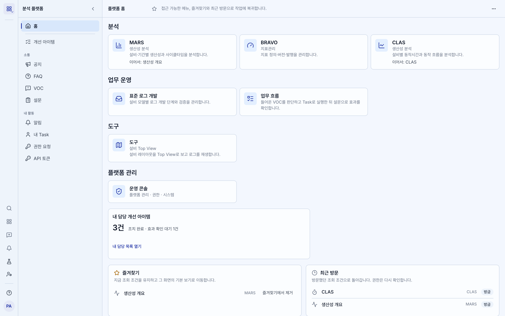
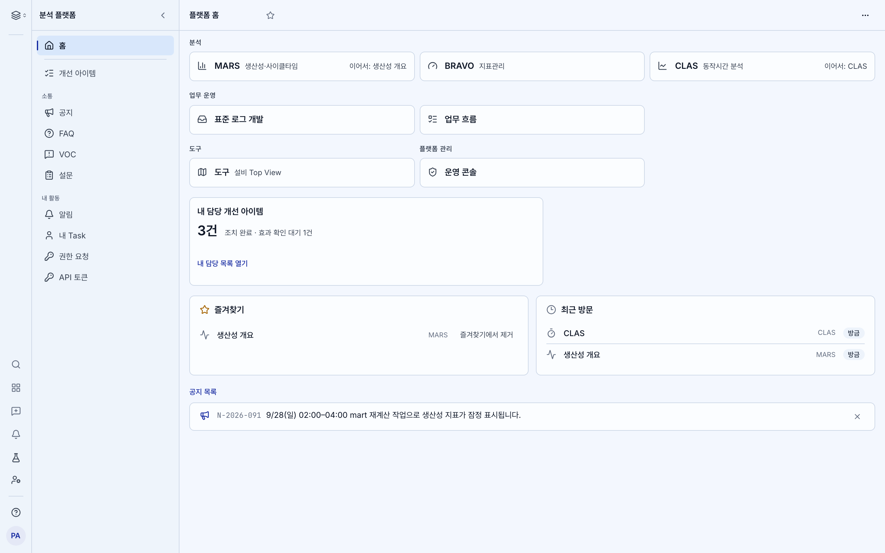
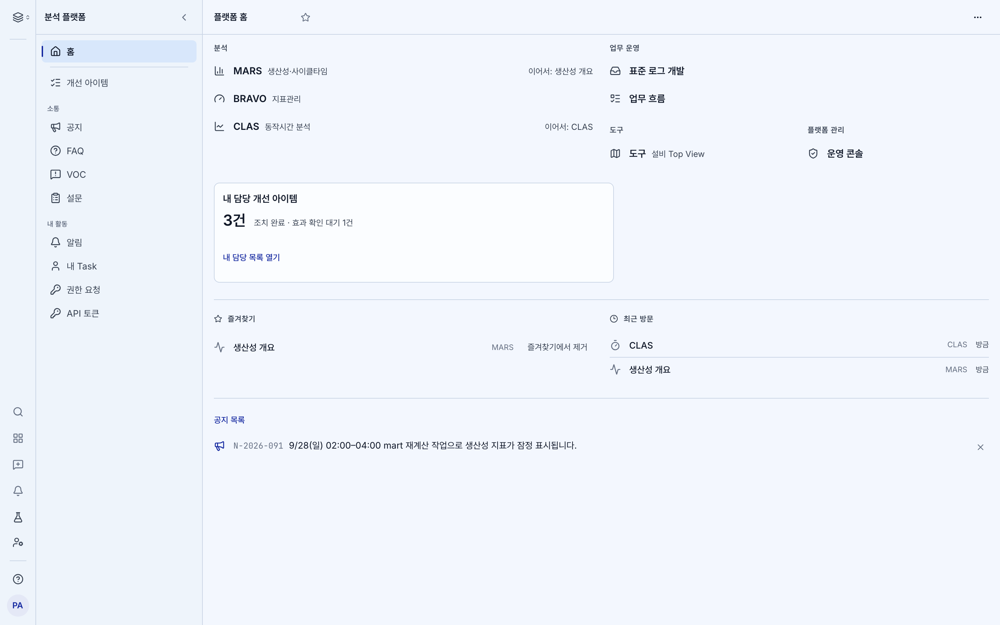
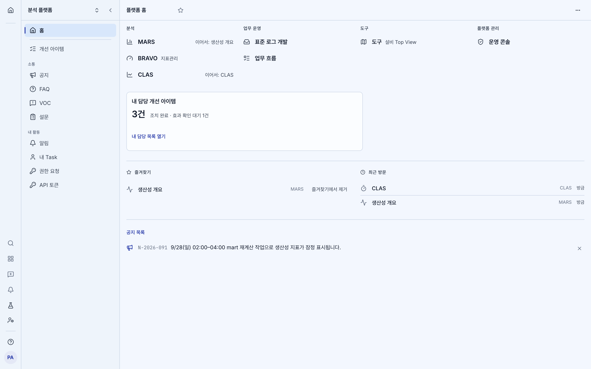
아직 기록이 없는 상태
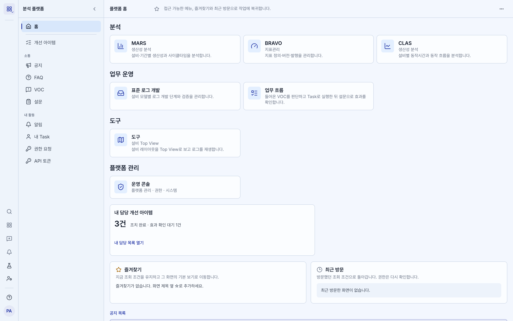
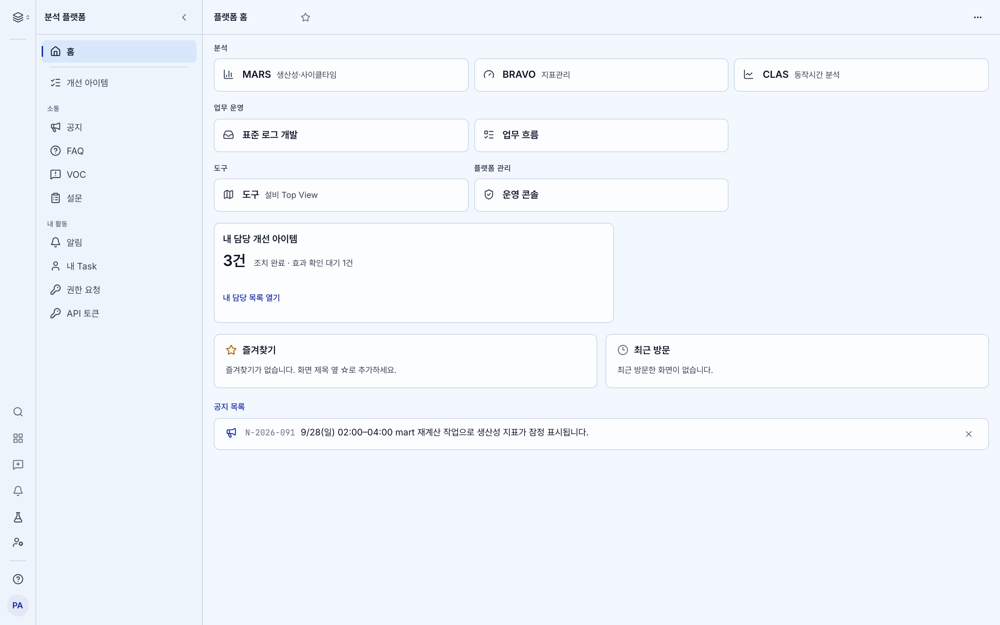
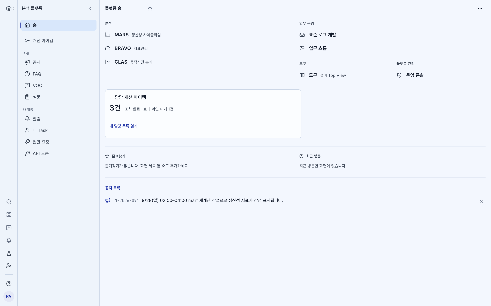
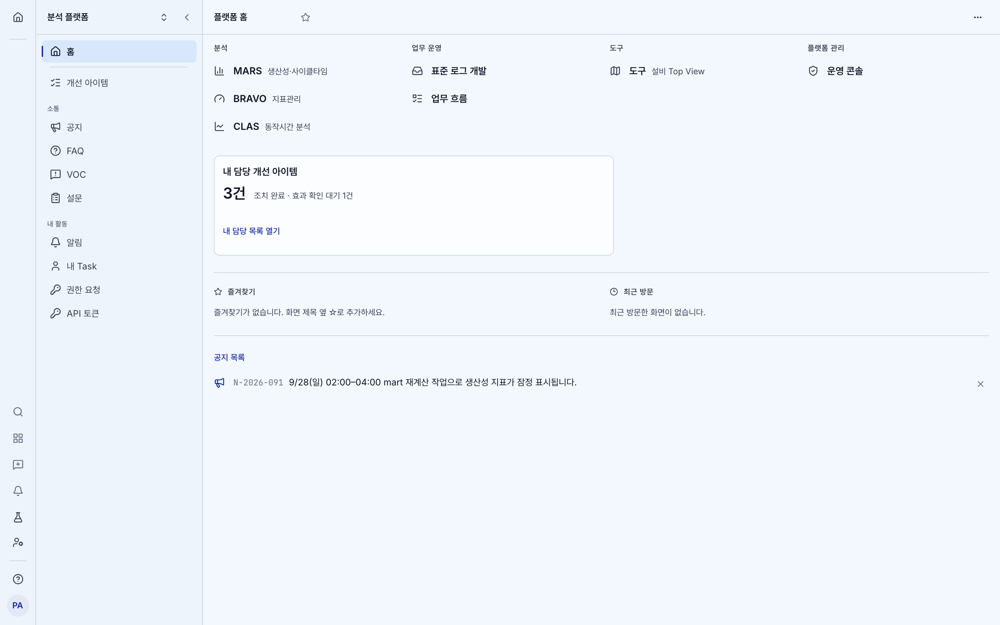
MARS 생산성 개요에서 연 화면
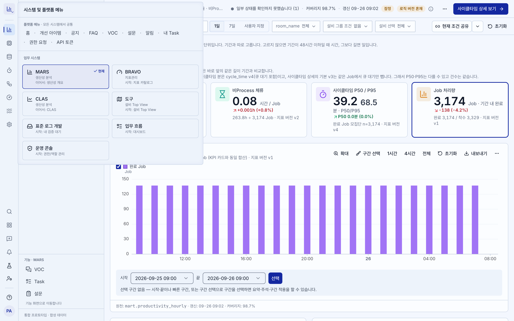
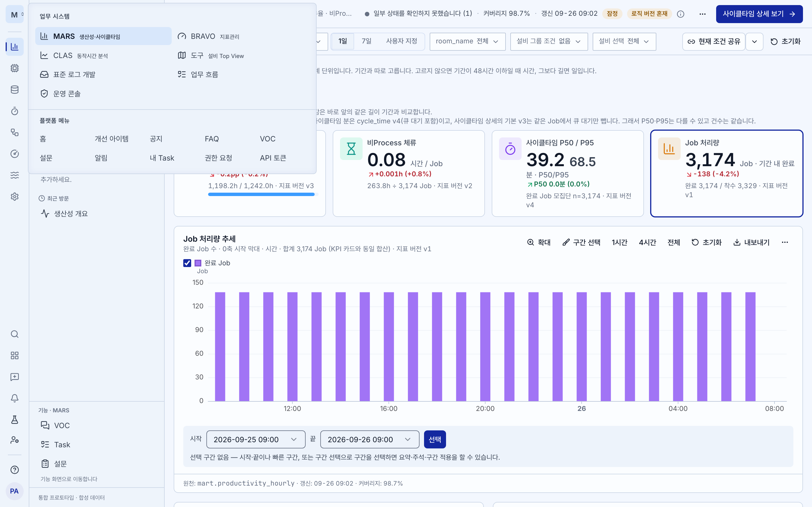
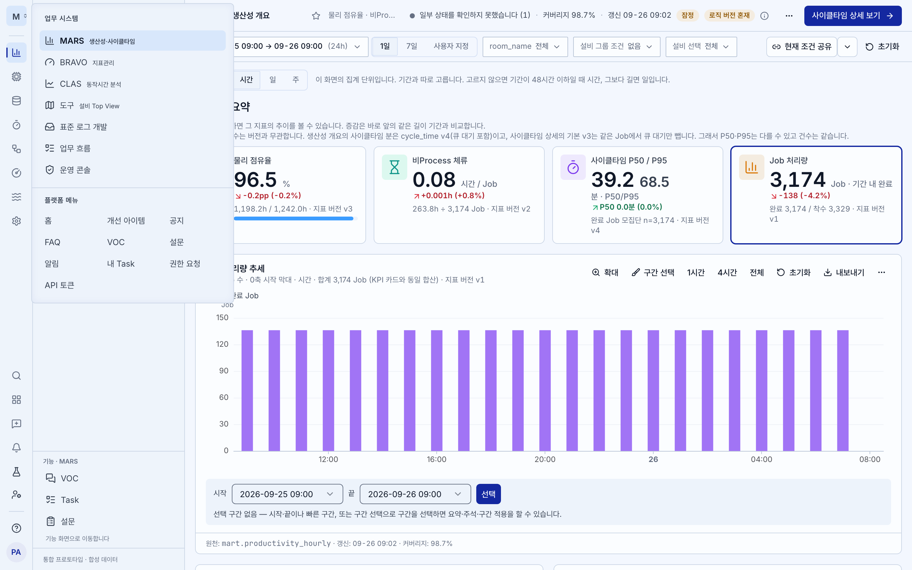
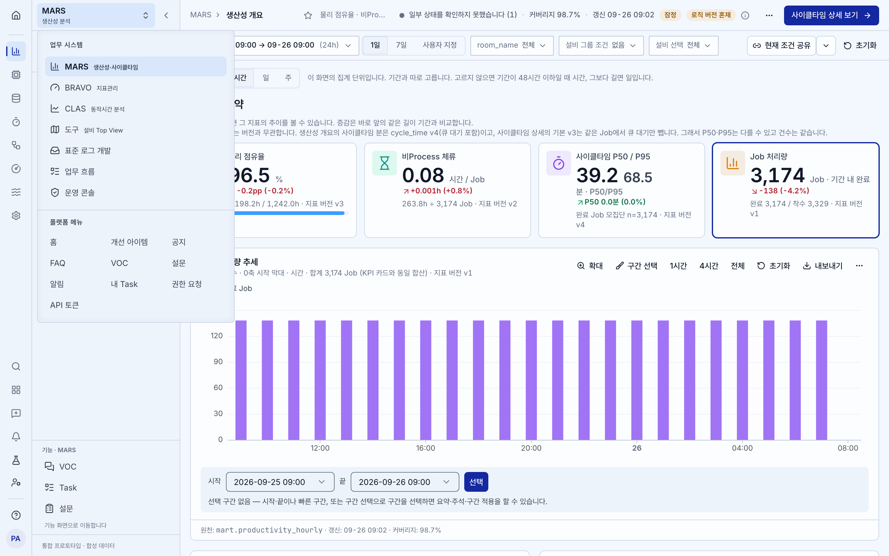
C가 달라지는 경우만 비교
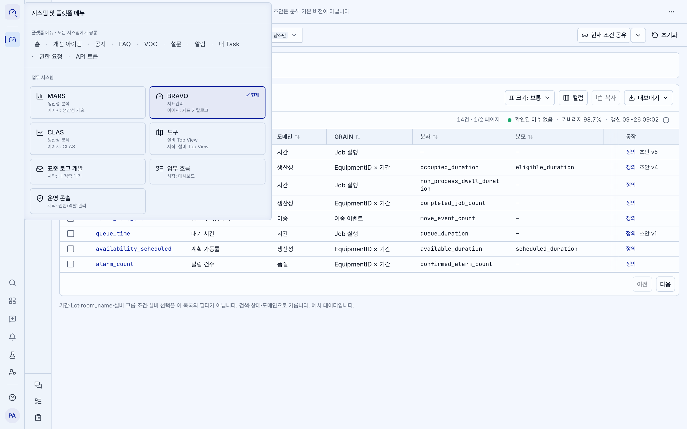
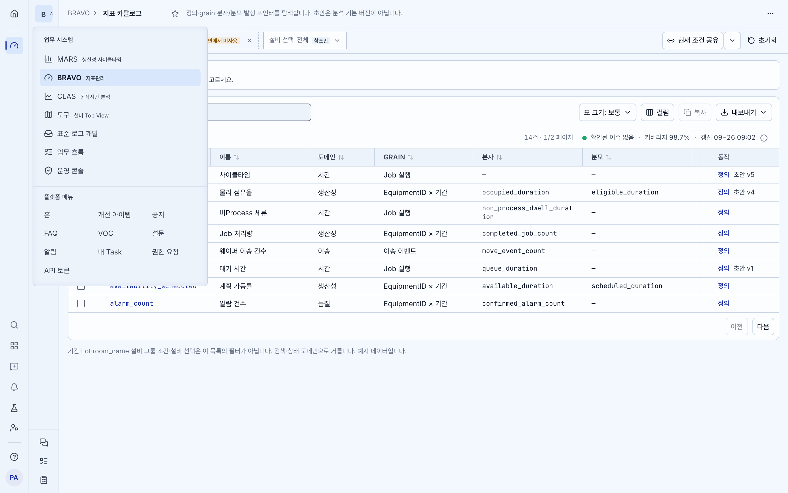
홈 왼쪽 위 320×200
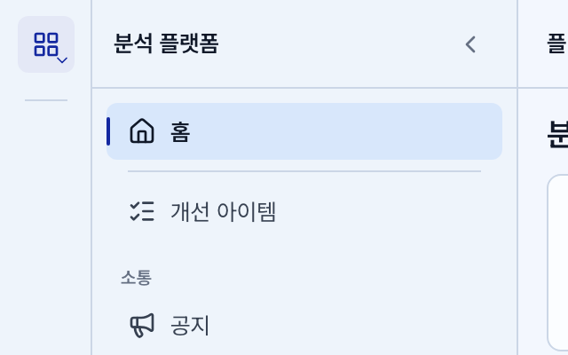
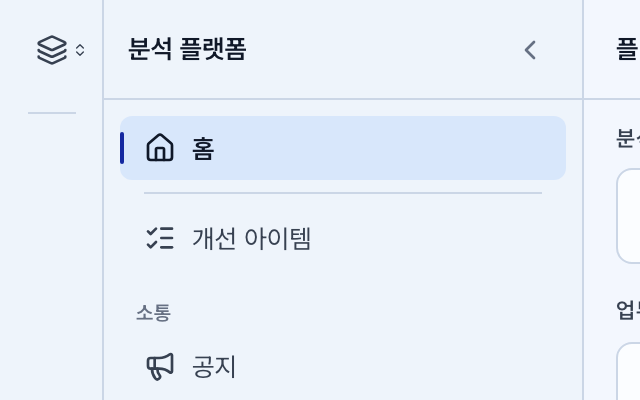
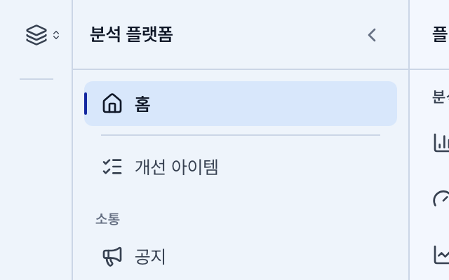
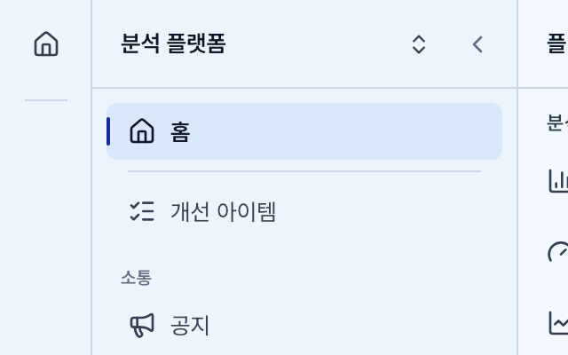
설명 문장은 없애고 짧은 부제만 남깁니다. 트리거의 파란 칩과 모서리 화살표도 없앱니다. 이동, 권한, 포커스, Esc 동작은 그대로입니다. hover와 키보드 포커스는 캡처에 나오지 않습니다.